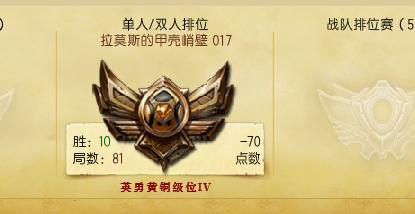
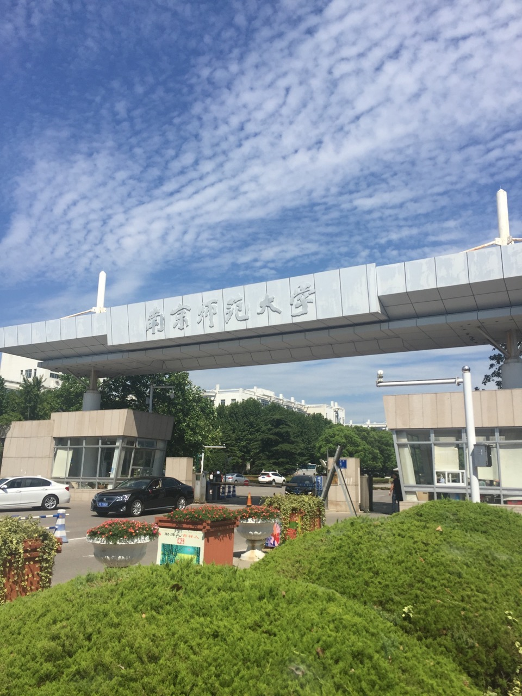

姓名 ： 张燚
性别 ： 男
爱好 ： 打游戏
我来自江苏省靖江市，那是个美丽富饶，人杰地灵，依山傍水的小城市。我的家乡,那是一个山清水秀的城市,整个城市充满了绿的气息. .长长的马路中央一条条绿化带里一棵棵绿叶繁茂的树显得那么生机勃勃,它们像一个个士兵一样庄严的立着.翠绿的枝叶在阳光的照耀下熠熠生辉,它们绿得那样新鲜耀眼.微风拂过叶子漾起阵阵绿波,好看极了.树旁的花草、蜜蜂、蝴蝶都像赶集似的聚拢来共同组成一道慈溪亮丽的风景线. 春天,家门前的小河清澈见底、波光粼粼,像面镜子.活泼可爱的小鱼在水里嬉戏,好像在跟玩捉迷藏.一旁的小草绿油油的,舒展着那幼嫩的绿叶.一棵棵苍天大树挺立在屋后,像一名士兵神气十足地站在那.在一棵百年古树下,孩子们正在玩耍.农民伯伯正在忙着插秧,为了秋天的丰收而准备. 夏天,路边的石榴花开了,池塘里的荷花也争着开放了.当火红的太阳升起,荷花和露珠被映得火红火红.一阵风拂过,农民伯伯脸上露出了一丝丝微笑. 秋天,一块块,里面集结着农民伯伯的辛勤劳动的稻谷,金黄金黄的,农民伯伯正高兴地收割稻子.山上更是热闹非凡,瞧!苹果林,苹果林火红火红的,越过苹果林来到橘子林,橘子金黄金黄的,红枣、葡萄……一片丰收的景象. 冬天,寒风刺骨.大地上覆盖了层层积雪,但我的家乡依然美丽.雪花还在不停地下着,我不禁想起：“忽如一夜春风来,千树万树梨花开.” 以上内容纯属虚构
我毕业于南京师范大学物科院通信工程专业，我对母校并没有太多感情啊，倒是想给个差评。。。。。
战五渣，没啥其他的技能，，除了帅绝人寰